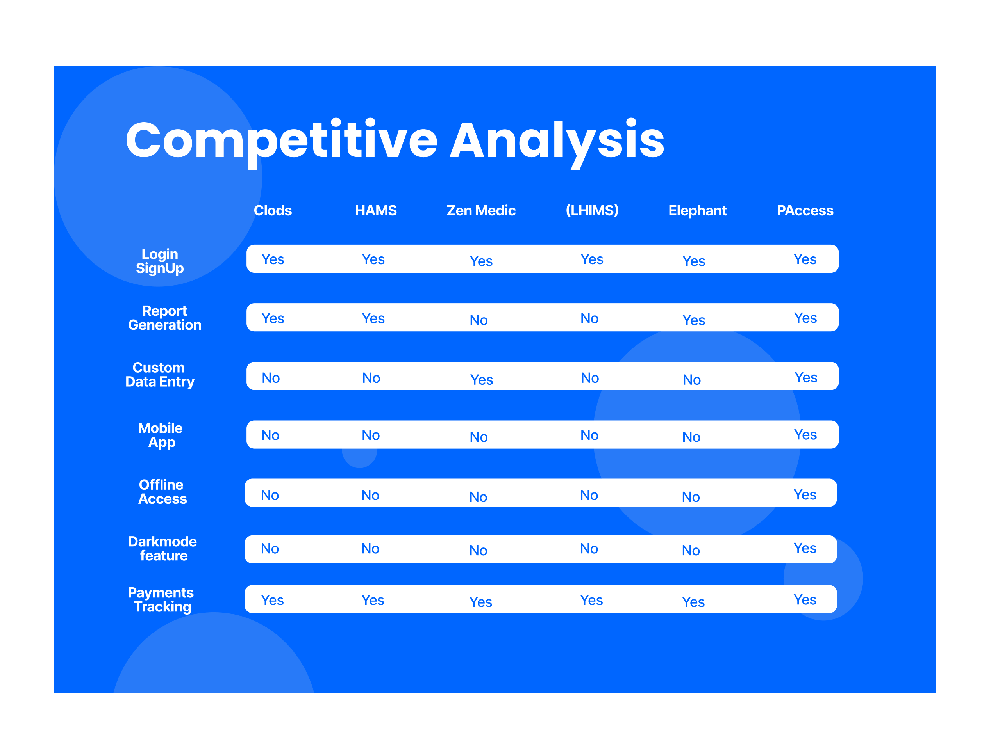

Smiling Mind for Meditation

No 1 Background
Smiling Minds is a non-profit organization that seek to help all minds thrive. The aim of Smiling Mind is to bring about a generational shoft in mental health in Australia. Their lifelong, evidence-based tools provide the fundamental mental fitness skills needed to support good mental health and resilience from an early age.
I worked on this case study for a period of five (5) weeks in a remote team around the worlld, focused on trying to study about how Smiling Mind began primarily for younger students but now they want to better serve the hybrid and remote workforce
The task was to better understand this user segment and help the Smiling Mind team better understand the needs and goals of those working remotely or hybrid looking to try meditation.
No 2 Research Plan
We kick started the case study with a research plan. This research plan entailed the problem space, the research objectives, methods, participants, session lengths, incentives and timelines

Having a research plan played a very important roleduring the case study as it helped keep us on track. It also allowed us to work with constraints, we understood our timeline and it enabled us to be organised and focused with our research
No 3 Problem
Smiling Mind was designed for younger students, not for the hybrid and remote workforce. And they do not know the needs and goals of this user segment they seek to reach
No 4 Research Objectives
- To understand why they would want to start meditation
- To understand the goals of the remote and hybrid workforce trying meditation for the first time
No 5 Research Methods
- User Interviews
- User Survey
- Usability Tests
No 6 Interviews
After drawing out the research plan, my team member and I moved on to start prepping for our research interview. As part os this, we prepared a research script and then conducted our interviews

The purpose for conducting these user interviews was to get a descriptive and contextual understanding of the target audience needs, attitudes/beliefs and behaviours
- Users reported high levels of stress and burnout due to the blurred boundaries between work and personal life. They expressed a need for effective stress relief solutions
- A maojority of interviewees expressed a preference for unguided meditation sessions over guided ones. They felt that having a voice follow was distracting
No 7 Competitive Analysis & Benchmarking

No 7 User Flow
In this section, we will delve into a detailed analysis of a specific user flow within our case study.

No 8 Competitive Analysis
Below is a competitor analysis for P-Access, with five competitors namely: CLODS, HAMS, Zen Medic, LHIMS & Elephant.
For P-Access, there is an opportunity to position itself as a balanced solution, offering comprehensive features at competitive pricing, while also emphasizing ease of use and user-friendliness to cater to a variety of healthcare providers.
9Low Fidelity Screens
o 10High Fidelity Screens

No 11 Prototype
The redesigned UI received positive feedback from the client, who believed it addressed the challenges of complex navigation
The redesign of the mobile especially allowed volunteers and staff to access and use the app seamlessly in the field, improving efficiency
While this case study did not involve user testing, the client reported an increase in engagement among volunteers and a smoother experience for coordination tree planting events